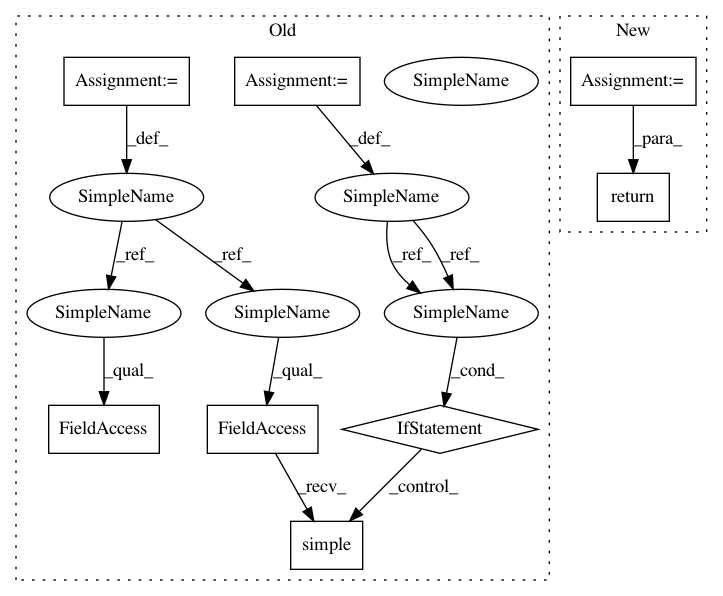

39f91522c829f1b680891750974570677ea5ea95,nilmtk/elecmeter.py,ElecMeter,good_sections,#ElecMeter#,397
Before Change
loader_kwargs.setdefault("n_look_ahead_rows", 10)
nodes = [GoodSections]
full_results = loader_kwargs.get("full_results")
results = self._compute_stat(nodes, loader_kwargs)
return results.results if full_results else results.results.simple()
def _get_stat_from_cache_or_compute(self, nodes, results_obj, loader_kwargs):
General function for computing statistics.
After Change
loader_kwargs.setdefault("n_look_ahead_rows", 10)
nodes = [GoodSections]
results_obj = GoodSections.results_class(self.device["max_sample_period"])
return self._get_stat_from_cache_or_compute(
nodes, results_obj, loader_kwargs)
def _get_stat_from_cache_or_compute(self, nodes, results_obj, loader_kwargs):
General function for computing statistics.
In pattern: SUPERPATTERN
Frequency: 3
Non-data size: 8
Instances
Project Name: nilmtk/nilmtk
Commit Name: 39f91522c829f1b680891750974570677ea5ea95
Time: 2014-11-25
Author: jack-list@xlk.org.uk
File Name: nilmtk/elecmeter.py
Class Name: ElecMeter
Method Name: good_sections
Project Name: nilmtk/nilmtk
Commit Name: 39f91522c829f1b680891750974570677ea5ea95
Time: 2014-11-25
Author: jack-list@xlk.org.uk
File Name: nilmtk/elecmeter.py
Class Name: ElecMeter
Method Name: good_sections
Project Name: nilmtk/nilmtk
Commit Name: 727196fda06a4c79354ad7f181c279ef78022e55
Time: 2014-11-25
Author: jack-list@xlk.org.uk
File Name: nilmtk/elecmeter.py
Class Name: ElecMeter
Method Name: dropout_rate
Project Name: nilmtk/nilmtk
Commit Name: a583300c421eb31041883e2775280810f1e853ba
Time: 2014-11-25
Author: jack-list@xlk.org.uk
File Name: nilmtk/elecmeter.py
Class Name: ElecMeter
Method Name: good_sections